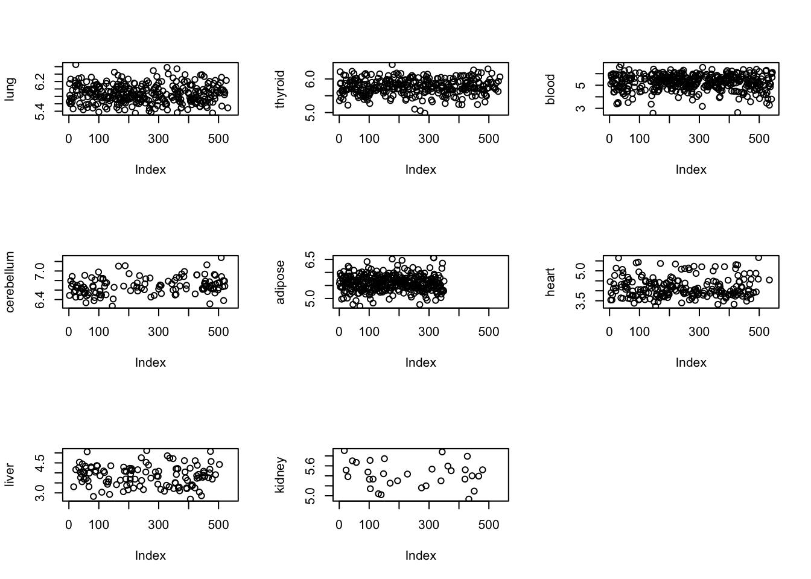

Since we do not have information of the smoking status of the individuals in the GTEx analysis, we try to see how the genes which we know are related to nicotine content of the body behave in terms of expression across the samples for the different tissues.
betahat_sebetahat <- get(load("../output/death_time_cor_nonmash.rda"))
sample_attributes <- get(load("../output/sample_attributes_filtered.rda"))
person_tissue_genes <- get(load("../output/person_tissue_genes_voom.rda"))The nicotine pathway genes
pathways <- read.delim("../utilities/CPDB_pathways_genes.tab")
pathway_names <- pathways[,1]
grep("Nicotine",pathway_names)## [1] 242 274 341 401 674 691 1154 1156 1157nicotine_pathways <- pathways[grep("Nicotine", pathway_names),]
nicotine_genes <- strsplit(as.character(nicotine_pathways[3,4]), "[,]")[[1]]dimnames(person_tissue_genes)[[2]]## [1] "Adipose - Subcutaneous"
## [2] "Adipose - Visceral (Omentum)"
## [3] "Adrenal Gland"
## [4] "Artery - Aorta"
## [5] "Artery - Coronary"
## [6] "Artery - Tibial"
## [7] "Bladder"
## [8] "Brain - Amygdala"
## [9] "Brain - Anterior cingulate cortex (BA24)"
## [10] "Brain - Caudate (basal ganglia)"
## [11] "Brain - Cerebellar Hemisphere"
## [12] "Brain - Cerebellum"
## [13] "Brain - Cortex"
## [14] "Brain - Frontal Cortex (BA9)"
## [15] "Brain - Hippocampus"
## [16] "Brain - Hypothalamus"
## [17] "Brain - Nucleus accumbens (basal ganglia)"
## [18] "Brain - Putamen (basal ganglia)"
## [19] "Brain - Spinal cord (cervical c-1)"
## [20] "Brain - Substantia nigra"
## [21] "Breast - Mammary Tissue"
## [22] "Cells - EBV-transformed lymphocytes"
## [23] "Cells - Transformed fibroblasts"
## [24] "Cervix - Ectocervix"
## [25] "Cervix - Endocervix"
## [26] "Colon - Sigmoid"
## [27] "Colon - Transverse"
## [28] "Esophagus - Gastroesophageal Junction"
## [29] "Esophagus - Mucosa"
## [30] "Esophagus - Muscularis"
## [31] "Fallopian Tube"
## [32] "Heart - Atrial Appendage"
## [33] "Heart - Left Ventricle"
## [34] "Kidney - Cortex"
## [35] "Liver"
## [36] "Lung"
## [37] "Minor Salivary Gland"
## [38] "Muscle - Skeletal"
## [39] "Nerve - Tibial"
## [40] "Ovary"
## [41] "Pancreas"
## [42] "Pituitary"
## [43] "Prostate"
## [44] "Skin - Not Sun Exposed (Suprapubic)"
## [45] "Skin - Sun Exposed (Lower leg)"
## [46] "Small Intestine - Terminal Ileum"
## [47] "Spleen"
## [48] "Stomach"
## [49] "Testis"
## [50] "Thyroid"
## [51] "Uterus"
## [52] "Vagina"
## [53] "Whole Blood"indices <- match(nicotine_genes, dimnames(person_tissue_genes)[[3]])
indices <- indices[!is.na(indices)]par(mfrow = c(3,3))
j <- 9
plot(person_tissue_genes[,36,indices[j]], ylab = "lung")
plot(person_tissue_genes[,50,indices[j]], ylab = "thyroid")
plot(person_tissue_genes[,53,indices[j]], ylab = "blood")
plot(person_tissue_genes[,12,indices[j]], ylab = "cerebellum")
plot(person_tissue_genes[,1,indices[j]], ylab = "adipose")
plot(person_tissue_genes[,33,indices[j]], ylab = "heart")
plot(person_tissue_genes[,35,indices[j]], ylab = "liver")
plot(person_tissue_genes[,34,indices[j]], ylab = "kidney") We do not see any distinct clusters in the expression patterns of Nicotine pathway genes, which implies that most likely the nicotine information is not something that can create clusters among the samples.
This R Markdown site was created with workflowr